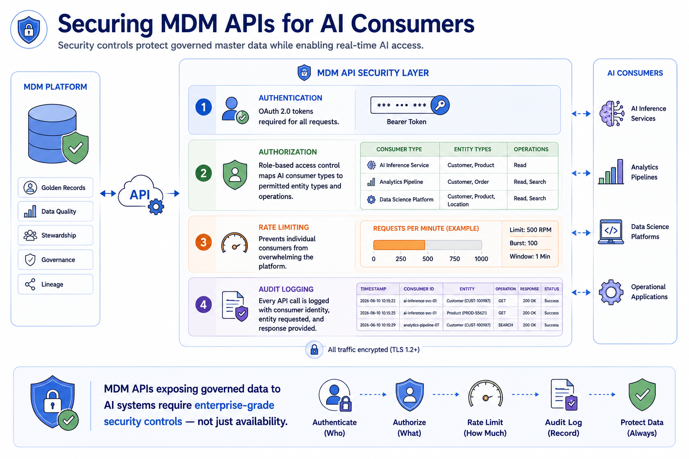
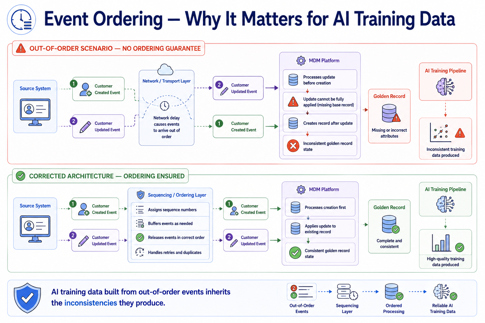
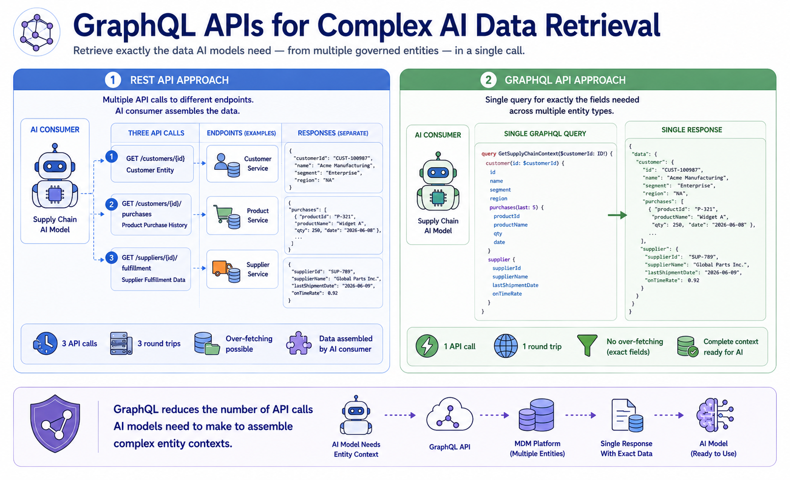
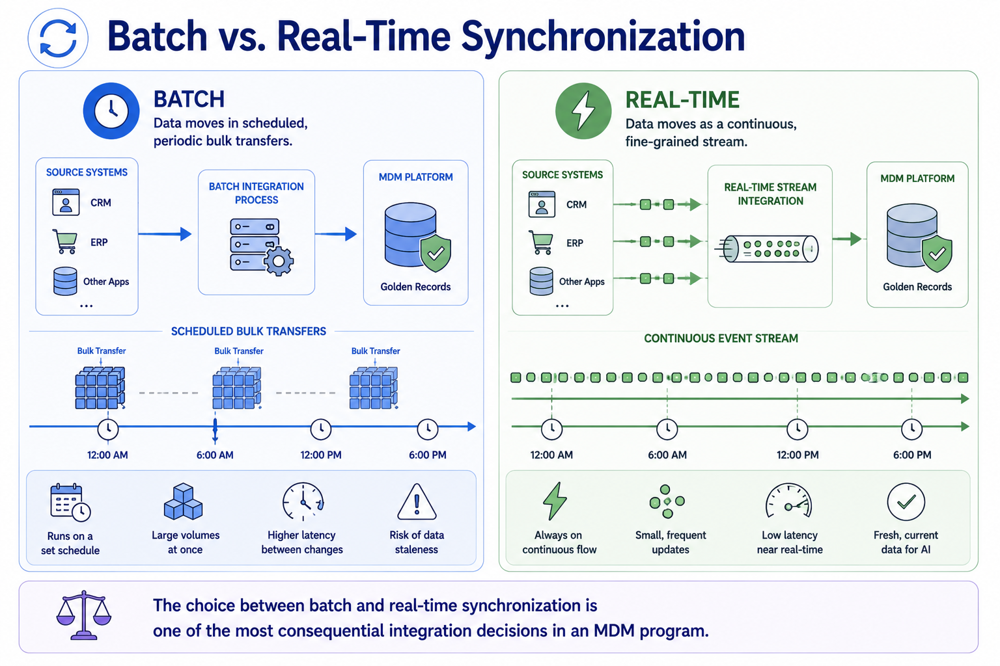

APIs and Event-Driven Architectures
Module support notes
API Security for MDM Data
MDM APIs expose some of the organization's most sensitive business data — customer records, supplier relationships, financial entity attributes — to a potentially broad set of consuming systems, including AI development environments that may sit outside the organization's core security perimeter. API security for MDM should include strong authentication using enterprise identity standards, role-based authorization that limits each AI consumer to the entity types and operations its use case requires, rate limiting that prevents any consumer from degrading platform performance, and comprehensive audit logging that records every data access event.
The audit log is particularly important for AI compliance — it provides the evidence that governed data was accessed through a controlled, documented channel rather than extracted informally.
Tip
When configuring role-based authorization for MDM APIs, define AI consumer roles specifically — not as a subset of existing operational system roles. An AI training pipeline needs read access to governed entity attributes but should never be able to trigger stewardship workflows or modify survivorship configurations. Separate consumer roles prevent AI systems from inadvertently affecting the governance processes that produce the data they consume.

Event Ordering and Consistency Guarantees
Event-driven architectures introduce ordering and consistency challenges that batch integration does not face. When events arrive out of order — common in distributed systems under load — the MDM platform may process an entity update before the creation event that should logically precede it, producing a temporarily inconsistent golden record. For AI training pipelines subscribing to the governed output stream, these inconsistencies can enter training datasets if the integration architecture does not include sequencing guarantees.
Organizations should explicitly design for event ordering in their MDM integration architecture — using sequence identifiers, idempotent event processing, and ordered delivery guarantees — rather than assuming that the event stream infrastructure handles ordering automatically.
Warning
AI training data built from out-of-order events inherits the inconsistencies they produce. Do not assume that event streaming infrastructure guarantees ordering by default — most platforms offer ordered delivery as a configuration option, not a default behavior. Failing to configure ordering explicitly is one of the most common sources of subtle, hard-to-diagnose inconsistency in AI training datasets built from event streams.

GraphQL as an Alternative to REST for MDM APIs
While REST APIs are the most common MDM API pattern, GraphQL is gaining adoption in MDM implementations that serve complex AI use cases requiring data from multiple related entity types in a single request. A supply chain AI model that needs customer, product, and supplier data to generate a prediction would require three separate REST API calls — or one GraphQL query specifying exactly the fields needed from all three entity types.
For AI inference latency, reducing the number of round trips to the MDM API is significant — and GraphQL's ability to retrieve precisely specified cross-entity data in a single request makes it an increasingly relevant option for AI-driven MDM integration architectures.
Note
GraphQL reduces the number of API calls AI models need to make to assemble complex entity contexts. This matters most for real-time AI inference use cases where latency is critical — a recommendation engine or fraud detection model that must assemble a customer profile, purchase history, and supplier context before returning a result cannot afford three sequential REST API calls. GraphQL's single-query retrieval of cross-entity data directly addresses this latency constraint.

APIs and event-driven architecture serve complementary roles — APIs deliver governed data on demand, while event-driven architecture delivers it continuously as the world changes.
